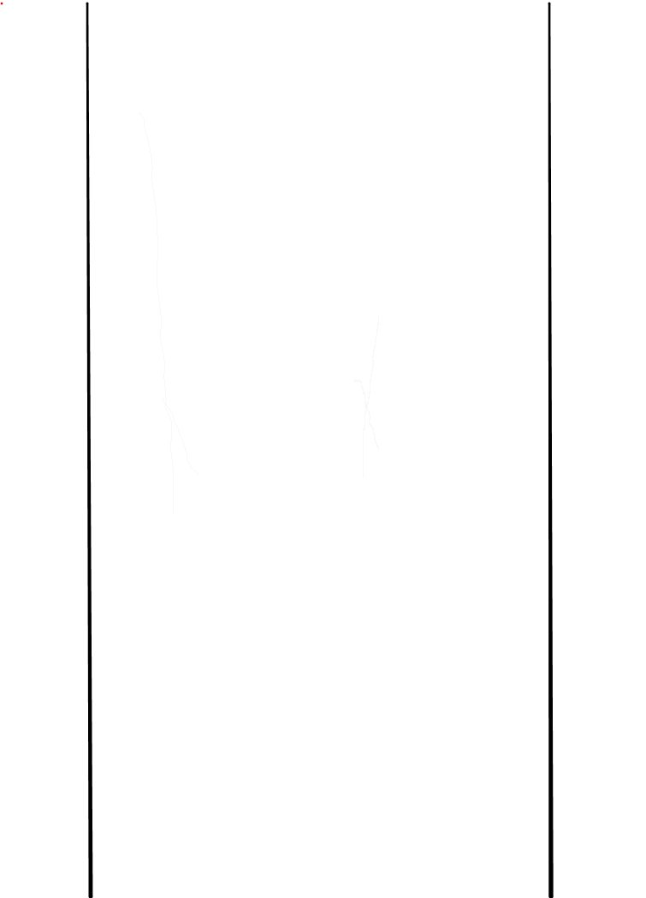

引言
在PC端开发的时候我们可以直接根据设计稿上的尺寸，直接使用px像素单位即可，但是由于移动端各个设备的宽度不一致，渲染也不一样，所以在移动端开发时不能直接px单位，常用的是使用rem单位。
设置html的基准字号font-size(hmltFontSize)
1 | 1rem = 1 * hmltFontSize |
故而只需要在不同的手机设置不同的html的基准字号就可以使程序在不同的设备上显示出来的尺寸不一样
如何实现呢？
css+js设置法
1 | html{ |
head脚本：1
2
3
4
5
6
7
8
9
10
11
12
13
14// 默认定义基准字号为100px，对应设计稿为640px。如设计稿尺寸有变，则修改下面的计算方式即可。
// 在样式中，使用rem单位的值均为设计稿的0.01倍，如设计稿标320px，则设置3.2rem即可。
// 设置根字号
window.document.documentElement.style.fontSize = window.document.documentElement.clientWidth / 20 + 'px';
// 设置viewport属性，安卓4.5以下均设置为1.0，其余通过计算取得
var ua = window.navigator.userAgent.toLowerCase();
var dpr = window.devicePixelRatio;
var scaleValue = 1.0 / dpr;
var metaEl = document.createElement('meta');
metaEl.setAttribute('name', 'viewport');
if (ua.substr(ua.indexOf('android') + 8, 3) < 4.5) metaEl.setAttribute('content', 'initial-scale=1.0, maximum-scale=1.0, minimum-scale=1.0, user-scalable=no');
else metaEl.setAttribute('content', 'initial-scale=' + scaleValue + ', maximum-scale=' + scaleValue + ', minimum-scale=' + scaleValue + ', user-scalable=no');
document.getElementsByTagName('head')[0].appendChild(metaEl);
body脚本（放在dom之后）：1
2
3
4
5
6
7
8// 重置脚本，配合html初始化设置隐藏，脚本加载完之后显示（防止重置时出现颤抖效果）
// 重置原因：rem布局在部分安卓手机webview（魅族、华为）表现异常（会超出屏幕）
var html = window.document.documentElement;
var body = window.document.body;
var htmlWidth = html.clientWidth; // 屏幕宽度
var bodyWidth = body.offsetWidth; // 设置满屏rem之后的宽度
var ratio = bodyWidth / htmlWidth;
html.style.fontSize = (ratio > 0 ? (html.style.fontSize.slice(0, -2) / ratio) : (html.style.fontSize.slice(0, -2) * ratio)) + 'px'; // 重置基准字号
scss+js设置法
html中初始化
iphone4是320px宽的尺寸，在4上16px的字号表现最合适，故而以此来换算，根据各个手机的宽度，来设置不同的基准字号，如下：1
2
3
4
5<script>
var html = window.document.documentElement;
var sw = html.clientWidth;
html.style.fontSize = sw * (16 / 320) + 'px';
</script>
设置了html的基准字号之后，在css里面设置尺寸时就可以使用rem了，乘以html后的值就是设计稿的值。
假设设计稿是640宽的，我们可以拿设计稿的尺寸除以32，得到的就是我们需要设置的rem的值。如一个按钮在640的设计稿上的宽高是200*60，那么css里面设置的就是200/32 rem和60/32 rem了。
假设设计稿是W宽，就是拿设计稿的尺寸除以W * (16 / 320)，也即是除以0.05W。
我们总不能每次都用计算器来算rem的值吧！这样效率会很低，研发时间会很长，不值得。
我们又想，如果CSS能够计算就好了，别说还真有，less、sass或stylus等预处理语言都可以在样式里面写运算表达式了，但是既然是预处理语言，就必须编译成普通的css文件才能被浏览器正常读取。具体变异过程见gulp
以sass为例：
我们可以定义一个函数表达式，如下：1
2
3
4@function r($px) {
@return $px / 32 + rem;
}
/* 32是根据设计来设定的，设计稿的尺寸*0.05 */
这样我们在scss的样式就可以使用r(设计稿的尺寸)来表示了，最后编译成css文件就可以被浏览器读取了。
但是，你以为这样就好了吗？ NO!
rem布局bug解决
在web前端开发的过程中，我们最恨谁，当然是浏览器厂商了，就是不按照一个标准来开发浏览器，各式各样的内核，唉！
经过测试发现，华为、魅族等手机有一些机型会出现使用rem布局超过一屏出现滚动的情况，真是的 v_v
该怎么解决呢？我是这样做的1
2
3
4
5
6
7
8
9
10let html = window.document.documentElement
let sw = html.clientWidth
let sh = html.clientHeight
function initRem (dom = 'app') {
let operateDom = document.getElementById(dom)
let operateDomWidth = operateDom.offsetWidth // 最外层盒子使用rem设置，不能使用%
let sRatio = sw / operateDomWidth // 计算比例
html.style.fontSize = html.style.fontSize.slice(0, -2) * sRatio + 'px' // 重置基准字号
}
如果谁有更好的解决方案，欢迎告知！
rem布局bug + 单页应用解决办法
上面这种都是针对非一屏的页面，you know!作为一名前端开发工程师，最讨厌的除了低版本的兼容外就是开发一屏的页面了，国内手机厂商太黑心，屏幕宽高比层出不穷，一屏的适配真是难倒一片开发人员，但有时一些活动页又必须是一屏的，该怎么做呢？
最大的难题就是那些宽大高小（对比设计图）的手机，例如iPhone4，我咧个去，几十年的老机子了，还有人在用，阻挡社会的前进啊！有木有。
我们想，只要在手机上面找到设计图的内容就可以了，如图：

但是这种单页的情况下，又得考虑单页 + rembug的情况，开发的时候就是没注意，就被坑惨了
最终代码代码如下：1
2
3
4
5
6
7
8
9
10
11
12
13
14
15
16
17
18
19
20let html = window.document.documentElement
let sw = html.clientWidth
let sh = html.clientHeight
// 单页面设置内容宽度基准字号（适配）
function initSingleRem (dom1 = 'app', dom2 = 'app') {
let operateDom1 = document.getElementById(dom1)
let operateDom2 = document.getElementById(dom2)
let operateDomWidth1 = operateDom1.offsetWidth
let operateDomWidth2 = operateDom2.offsetWidth
let sRatio1 = ((750 / 1205) * sh) / sw // 设计稿和屏幕的比例
let sRatio2 = sw / operateDomWidth1 // 屏幕和最外层div的比例
if (sh / sw < 1205 / 750) { // 高小宽大的手机
operateDom2.style.width = operateDomWidth2 * sRatio1 * sRatio2 + 'px' // 设置里层div的宽
}
html.style.fontSize = html.style.fontSize.slice(0, -2) * sRatio1 * sRatio2 + 'px' // 重置基准字号
operateDom1.style.width = sw + 'px' // 最后将最外层div设为满屏
}
这样，所有的内容就在中间黑色的区域内了，就可以达到一屏适配了
终极代码
封装成一个库，引用即可1
2
3
4
5
6
7
8
9
10
11
12
13
14
15
16
17
18
19
20
21
22
23
24
25
26
27
28
29
30
31
32
33
34
35
36
37
38
39
40
41
42
43
44
45
46
47
48
49
50
51
52
53
54
55// 重新设置基准字号（为了兼容部分安卓手机）
// 使用initRem()时：最外层div宽必须设置r(750)，不能设置100%）
// initSingleRem()时：最外层div和第二层div宽必须设置r(750)，不能设置100%）
let html = window.document.documentElement
let sw = html.clientWidth
let sh = html.clientHeight
// 非单页设置宽度及基准字号
function initRem (dom = 'app') {
let operateDom = document.getElementById(dom)
let operateDomWidth = operateDom.offsetWidth // 最外层盒子使用rem设置，不能使用%
let sRatio = sw / operateDomWidth // 计算比例
html.style.fontSize = html.style.fontSize.slice(0, -2) * sRatio + 'px' // 重置基准字号
}
// 单页面设置内容宽度基准字号（找到中间区域）
function initSingleRem (dom1 = 'app', dom2 = 'app') {
let operateDom1 = document.getElementById(dom1)
let operateDom2 = document.getElementById(dom2)
let operateDomWidth1 = operateDom1.offsetWidth
let operateDomWidth2 = operateDom2.offsetWidth
let sRatio1 = ((750 / 1205) * sh) / sw // 设计稿和屏幕的比例
let sRatio2 = sw / operateDomWidth1 // 屏幕和最外层div的比例
if (sh / sw < 1205 / 750) { // 高小宽大的手机
operateDom2.style.width = operateDomWidth2 * sRatio1 * sRatio2 + 'px' // 设置里层div的宽
html.style.fontSize = html.style.fontSize.slice(0, -2) * sRatio1 * sRatio2 + 'px' // 重置基准字号
operateDom1.style.width = sw + 'px' // 最后将最外层div设为满屏
} else {
html.style.fontSize = html.style.fontSize.slice(0, -2) * sRatio2 + 'px' // 重置基准字号
}
}
// 单屏且最外层div铺满屏幕（例如满屏列表项）
// 注意：布局时对于接近铺满屏幕的线勿直接适用长度值
function initSingleWidth (dom) {
let operateDom = document.getElementById(dom)
operateDom.style.width = sw + 'px'
}
// 单屏且内部div铺满屏幕（例如页面中部分元素铺满）
function initWidth (dom) {
let operateDom = document.getElementById(dom)
let operateDomWidth = operateDom.offsetWidth
operateDom.style.width = sw + 'px'
operateDom.style.marginLeft = -(sw - operateDomWidth) / 2 + 'px'
}
export {
initRem,
initSingleRem,
initSingleWidth,
initWidth
}